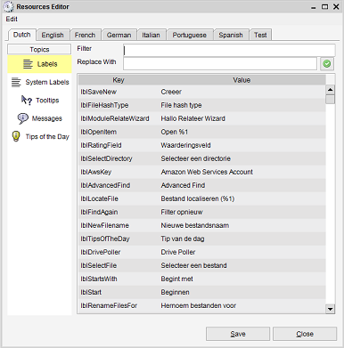

Resource Editor
Menu path: Settings > Resources Editor
With the resource editor translations can be created.

There are several categories of 'resources' such as
labels and messages. You can either edit one of the available languages or you can choose to create a whole new
language.
Finding the text
You can quickly filter the overview on the text you are looking for by typing in the Filter field. With each key
press the overview is filter on the rows where the value contains the text entered in the filter field. Clearing out the field entirely
will reset the filter and the overview itself.
Editing resources
Updating an existing resource is as simple as typing a new value in the table (first click on the text and start typing or
press the F2 key to enable editing).
Alternatively you can make use of the replacement functionality. First, type in the filter field the text you would like
to be replaced. Secondly, type the replacement text in the Replace With field. Press the green button to replace all the text.
There is no undo button, however, you can still cancel out by closing the dialog without saving (press 'Cancel').
Press save to save all the changes you have made.
Create a new language
Select the 'create a new language' option from the edit menu. Enter the name of the new language pack and
select the language on which this new language should be based. Basing a language on an existing language means
that its values will be used in the new language until they have been edited.
Make sure to save your changes before closing the dialog.